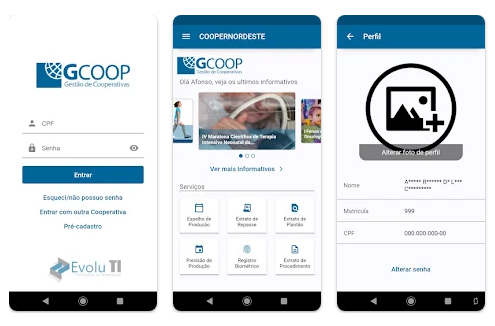
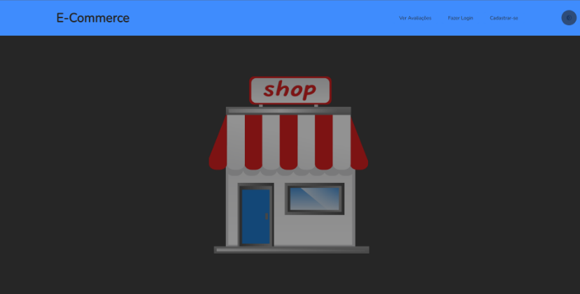
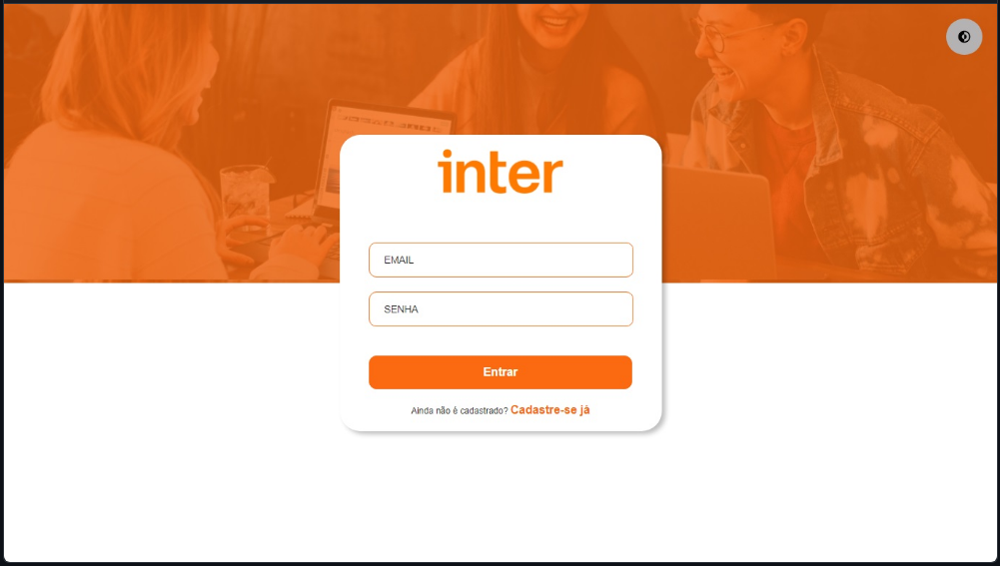
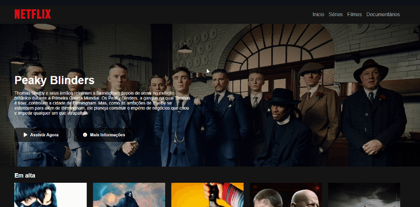

Jorge Junior
Desenvolvedor Front-end e Mobile
Engenheiro de Computação em formação no Instituto Federal do Ceará (IFCE)

Sobre mim
Desde 2019, quando entrei no curso de Engenharia de Computção, muito entusiasmado com programação, o que pra mim era um novo mundo, entrei de cabeça no mundo desenvolvimento de software, especialmente mo desenvolvimento Web e de aplicativos móveis, e até hoje sou fascinado pelos resultados dos projetos em que me arrisco.
Atualmente estou em busca de novos desafios, e novas experiências, manter minha vida profissional ativa, manter relações ativas com profissionais da minha área, conseguir experiências em grandes empresas e grandes times de desenvolvimento.
Quando não estou ocupado codando para o trabalho, ou nas horas de estudo da faculdade, é comum me encontrar ainda estudando algo sobre a área da tecnologia (IA, hardware, etc), ou matando tempo com jogos ou cinema.
Experiências
- 2020 - Presente
-
EvoluTI
Estagiário
Desenvolvimento Web
Estagiário desenvolvendo uma Aplicação Web para gerenciamento de cooperativas hospitalares. Fui encarregado de refatorar, manter e iniciar as aplicações Web dos novos projetos iniciados pela empresa, consumindo API Rest.
Foi um grande desafio, tamanha a responsabilidade, mas sempre procurei manter os melhores padrões de estruturação dos projeto, e recorrendo aos superiores nas dificuldades enfrentadas.
- 2022 - Presente
-
EvoluTI
Desenvolvedor Junior
Desenvolvimento Web e Mobile
Efetivado na empresa em que trabalhei como estagiário. Continuei desenvolvendo as aplicações Web da empresa, e agora tambem trabalhando como dedsenvolvedor Mobile híbrido com Flutter, lançando os aplicativos tanto para Play Store quanto App Store.
Projetos
-



-
GCOOP Mobile
Aplicação Mobile híbrida para acesso dos cooperados às suas operações disponíveis na Cooperativa.
-


-
E-commerce
Aplicação Web SPA simulando uma página de avaliações de um e-commerce genérico, com login e cadastro de usuários, visualização e edição de perfil, e adição de ccomentários.
-

-
Réplica Inter
Aplicação Web réplica do design do banco Inter, com login e criaçção de usuários, um dashboard com resumo de operações disponíveis e transações recentes.
-

-
Réplica Netflix
Aplicação Web réplica do design da pagina inicial da Netflix, utilizando apenas HTML e CSS para a estilização, e Owl Carousel jQuery para o slider da lista de filmes.